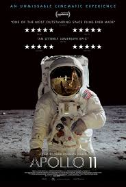
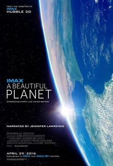
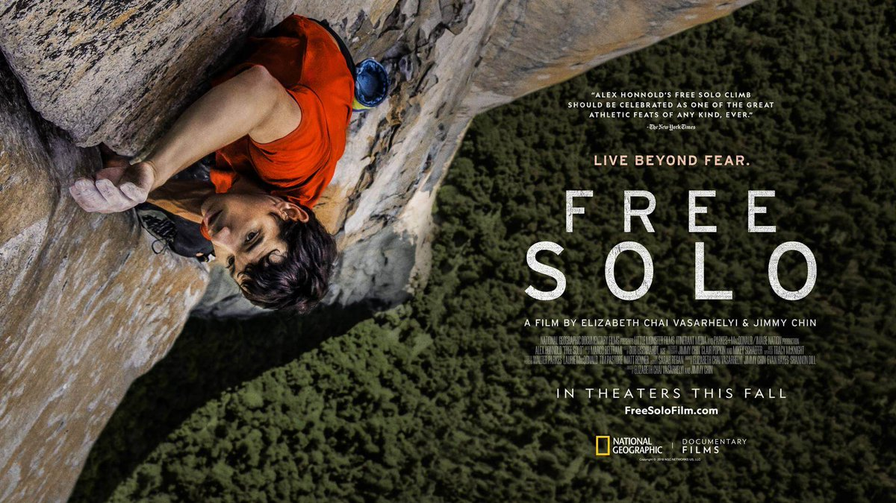
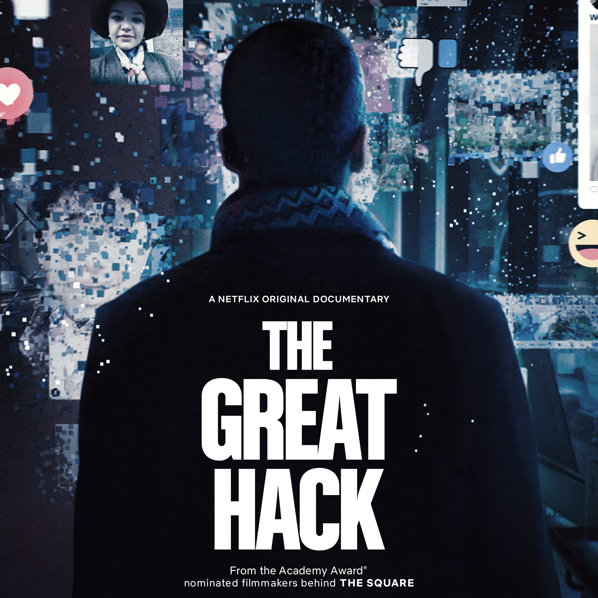
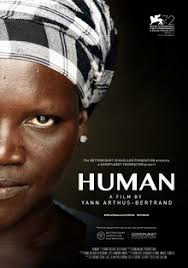
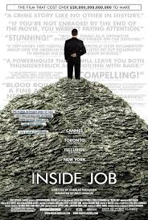
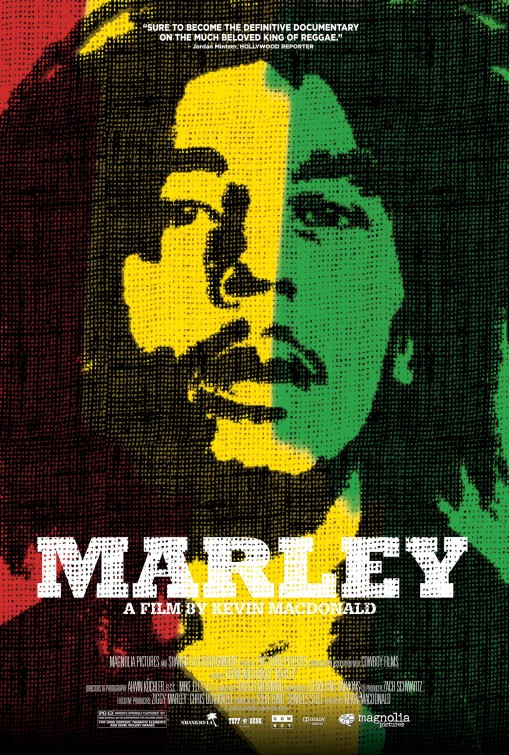
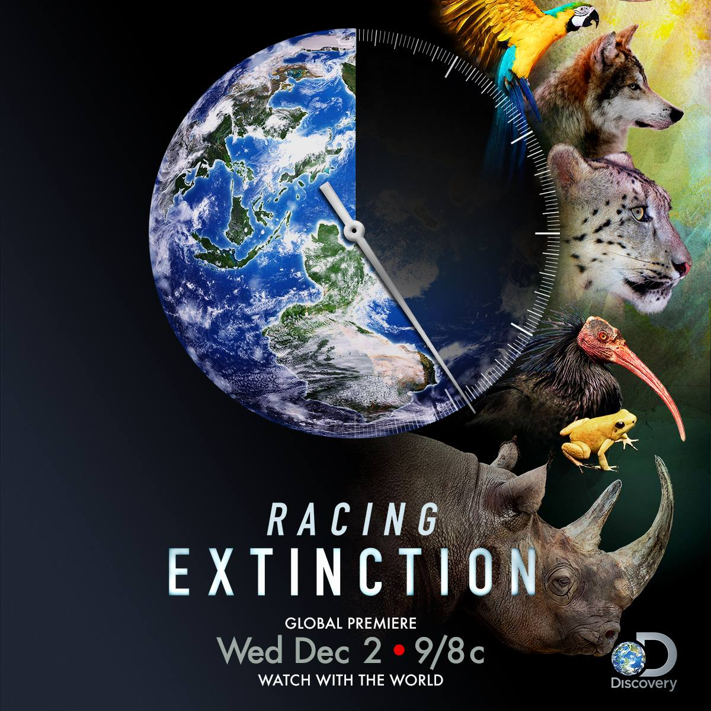
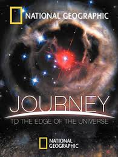

5.1: Apollo 11
Ratings : 🌟 8.2
Genre :DocumentaryHistory
Release Date : 1 March 2019
Watch-Time : 1h 33min.
Director : Todd Douglas Miller
Starring : Edwin Aldrin, Neil Armstrong, Michael Collins, Charles Duke, Bruce McCandless
Box-Office : $15.3 million
Storyline:
On its fiftieth anniversary, the events surrounding the actual Apollo 11 space mission are presented solely using archival footage and still photographs of or associated with the mission. The events span from the eleventh hour preparations for the launch to shortly after the safe touchdown of the capsule with its three astronauts back on Earth. The mission is historic as the first time humans had stepped on the surface of the Earth's moon. It arguably made household names of Neil Armstrong and Buzz Aldrin as the first and second to walk on the moon, and slightly less so for the third astronaut, Michael Collins, who remained inside the capsule at the time. It was arguably the most dangerous space mission at the time in part to the astronauts leaving the safety of the capsule.
5.2: A Beautiful Planet
Ratings : 🌟 7.4
Genre : Documentary
Release Date : 29 April 2016
Watch-Time : 46min.
Director : Toni Myers
Starring : Jennifer Lawrence, Samantha Cristoforetti, Scott Kelly
Box-Office : $25.7 million
Storyline:
A Beautiful Planet is a 2016 American documentary film that explores Earth by showing IMAX footage, recorded over the course of fifteen months by astronauts aboard the International Space Station. It is narrated by actress Jennifer Lawrence.
The film examines daily experiences of the astronauts, who represent the respective space agencies for the United States, Russia, Europe, and Japan. This multinational crew lives and works on the Space Station, an orbiting symbol of cutting edge technology and a peaceful international cooperation.
4.1: Free Solo
Ratings : 🌟 7.7
Genre : DocumentaryAdventureSports
Release Date : 12 April 2019
Watch-Time : 1h 40min.
Director : Jimmy Chin, Elizabeth Chai Vasarhelyi
Starring : Alex Honnold, Sanni McCandless, Jimmy Chin, Tommy Caldwell
Box-Office : $29.3 million
Storyline:
Professional rock climber Alex Honnold attempts to conquer the first free solo climb of famed El Capitan's 900-metre vertical rock face at Yosemite National Park.
4.2: The Great Hack
Ratings : 🌟 7.1
Genre : DocumentaryHistoryBiography
Release Date : 24 July 2019
Watch-Time : 1h 54min.
Director : Karim Amer, Jehane Noujaim
Starring : Carole Cadwalladr, David Carroll, Brittany Kaiser
Box-Office : ?
Storyline:
The Great Hack is a 2019 documentary film about the Facebook–Cambridge Analytica data scandal.
Cambridge Analytica, the firm responsible for the scandal, was dedicated to big data. The data which was collected was meant to be used as part of a sales strategy that involved creating massive campaigns that approached users in a personal manner. The results of this campaign ended up disrupting US and UK politics and led to claims of complicity of social media enterprises such as Facebook.
3.1: Human
Ratings : 🌟 8.7
Genre : Documentary
Release Date : 12 September 2015
Watch-Time : 3h 10min.
Director : Yann Arthus-Bertrand
Starring : Luis Cancu, Atman, Berthony
Box-Office : ?
Storyline:
A collection of stories about and images of our world, offering an immersion to the core of what it means to be human.
3.2: Inside Job
Ratings : 🌟 8.2
Genre : DocumentaryCrime
Release Date : 12 November 2010
Watch-Time : 1h 49min.
Director : Charles Ferguson
Starring : Matt Damon, Gylfi Zoega, Andri Snær Magnason
Box-Office : $7.9 million
Storyline:
'Inside Job' provides a comprehensive analysis of the global financial crisis of 2008, which at a cost over $20 trillion, caused millions of people to lose their jobs and homes in the worst recession since the Great Depression, and nearly resulted in a global financial collapse. Through exhaustive research and extensive interviews with key financial insiders, politicians, journalists, and academics, the film traces the rise of a rogue industry which has corrupted politics, regulation, and academia. It was made on location in the United States, Iceland, England, France, Singapore, and China.
2.1: Marley
Ratings : 🌟 8.0
Genre : DocumentaryBiographyMusic
Release Date : 20 April 2012
Watch-Time : 2h 24min.
Director : Kevin Macdonald
Starring : Bob Marley, Ziggy Marley, Rita Marley
Box-Office : ?
Storyline:
Bob Marley's universal appeal, impact on music history and role as a social and political prophet is both unique and unparalleled. The definitive life story of the musician, revolutionary, and legend, from his early days to his rise to international super-stardom. Made with the support of the Marley family, there is rare footage, incredible performances and revelatory interviews with the people that knew him best.
2.2: Racing Extinction
Ratings : 🌟 8.3
Genre : DocumentaryAdventureNewss
Release Date : 18 September 2015
Watch-Time : 1h 30min.
Director : Louie Psihoyos
Starring : Elon Musk, Joel Sartore, Louie Psihoyos
Box-Office : ?
Storyline:
Scientists predict we may lose half the species on the planet by the end of the century. They believe we have entered the sixth major extinction event in Earth's history. Number five took out the dinosaurs. This era is called the Anthropocene, or 'Age of Man', because the evidence shows that humanity has sparked this catastrophic loss. We are the only ones who can stop it as well. The Oceanic Preservation Society, the group behind the Academy Award® winning film THE COVE, is back for "Racing Extinction". Along with some new innovators, OPS will bring a voice to the thousands of species on the very edge of life. An unlikely team of activists is out to expose the two worlds endangering species across the globe. The first threat to the wild comes from the international trade of wildlife. Bogus markets are being created at the expense of creatures who have survived on this planet for millions of years. The other threat is all around us, hiding in plain sight.
1.1: Journey to the Edge of the Universe
Ratings : 🌟 8.5
Genre : DocumentaryFamily
Release Date : 7 December 2008
Watch-Time : 1h 31min.
Director : Yavar Abbas
Starring : Alec Baldwin, Sean Pertwee, Paul Essiembre
Box-Office : ?
Storyline:
Journey to the Edge of the Universe is a documentary film broadcast on National Geographic and the Discovery Channel. It depicts a simulated space journey from Earth to the edge of the universe.
1.2: Touching the Void

Ratings : 🌟 8.0
Genre : DocumentaryDramaAdventure
Release Date : 12 March 2004
Watch-Time : 1h 46min.
Director : Kevin Macdonald
Starring : Brendan Mackey, Nicholas Aaron, Ollie Ryall
Box-Office : $14 million
Storyline:
In 1985 two friends, Joe Simpson and Simon Yates, set out to climb Siula Grande in Peru via the West Face, a hitherto unaccomplished feat by any climber. After a tough ascent they succeed but on the descent they run into significant problems. Soon they are both in dire danger and the chances of surviving are slim.